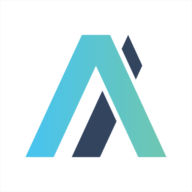

Louisa AI
Jan 2026 – May 2026
Remote
Contributed to an internal release automation platform that streamlines deployment workflows across engineering teams.
- Worked on the GitHub integration phase end-to-end, implementing backend services, database models, webhooks and frontend components.
- Developed APIs to interact with GitHub workflows and enable automated execution and monitoring of deployment processes.
- Integrated Slack notification systems to provide real-time updates for workflow execution, approvals and failure handling.
- Shipped full-stack features on a type-safe stack including React, React Flow, TanStack, Hono, Bun and Drizzle ORM.
- Built compile-time safe client-server contracts via oRPC.
- React
- React Flow
- TanStack
- Hono
- Bun
- Drizzle ORM
- oRPC
- GitHub
- Slack